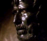
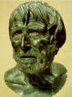

IL TEMPO DELL'ESISTENZA IN SENECA
LINEAMENTI DI UNA BIOGRAFIA:
Seneca nacque in un anno imprecisato, collocabile tra l'8 e l'1 a.C. a Cordova. Il padre, omonimo del filosofo, si dedicò soprattutto allo studio della retorica.
Seneca, condotto a Roma per compiere gli studi, fu avviato alla retorica ma ben presto sentì il fascino della filosofia. Suoi maestri furono Attalo, esponente della "Nuova Stoa", il cinico Demetrio e Sozione, seguace del circolo neopitagorico dei Sestii.
Intorno al 31 d.C. intraprese la strada della politica, ma divenuto inviso a Caligola (immagine 1a), nel 39 fu condannato a morte e si salvò solo per l'intercessione di una delle amanti dell'imperatore.
Nel 41 fu esiliato in Corsica con l'accusa di adulterio con Giulia Livilla, sorella di Caligola. Entrato in seguito nelle grazie di Agrippina, moglie di Claudio, nel 49 ottenne la revoca del bando e l'incarico di educare il figlio dodicenne di Agrippina, Domizio Nerone, il futuro imperatore.
A fianco del nuovo imperatore, assieme ad Agrippina e ad Afranio Burro, prefetto del pretorio, Seneca dispiegò un'azione politica positiva, riuscendo per i primi cinque anni del regno di Nerone (il cosiddetto 'quinquennio felice', dal 54 al 59) ad equilibrare i rapporti tra il principe e il senato.
Tuttavia nel 59 il fragilissimo equilibrio politico si ruppe definitivamente. L'anno precedente Nerone si era invaghito della bellissima Poppea Sabina al punto di meditare il divorzio da Ottavia, sua sorellastra e pupilla di sua madre, la quale, poiché si opponeva al nuovo legame del figlio, venne da lui stesso messa a morte. Morto anche Burro per sospetto avvelenamento, Seneca, ormai solo, nel 62 chiese di ritirarsi a vita privata. Nel 65 fu accusato da Nerone di aver preso parte alla congiura dei Pisoni e, costretto a uccidersi, morì con esemplare dignità e compostezza.
Nostre fonti principali per la biografia senecana, oltre alle stesse opere del filosofo, sono le opere di Tacito (in particolare gli Annales), Svetonio e Cassio Dione.

Gli intellettuali romani di età imperiale tornano a cercare nella dottrina stoica soprattutto una garanzia di autonomia rispetto a un sistema politico accettato come parte della realtà, ma deprivato di valore morale in sé; e a praticare la conciliazione stoica con il mondo in una prospettiva di esercizio razionale situata più in alto rispetto al piano sociale dell'etica e alle regole gerarchiche del potere.
L'entusiasmo che Seneca cerca di trasmettere all'amico Sereno nello scritto sulla Fermezza del saggio (il De constantia sapientis, una vera professione di fede filosofica, collocabile in un periodo difficile della sua vita, il primo allontanamento dalla vita pubblica) è motivato dall'idea di aver trovato nella filosofia stoica gli strumenti per un virile dominio sulla propria vita, una prospettiva dura di indipendenza, capace di garantire al saggio l'intangibilità rispetto ad ogni tipo di ingiustizia o di insulto, per l'assoluta incompatibilità del suo orizzonte mentale con quello di chi concepisce l'ingiuria.
La ricetta di Seneca della "vita felice" fa perno sulla virtù, secondo i canoni più rigorosi dell'autosufficienza stoica: "il sommo bene è la fermezza di un animo saldo e la sua previdenza, e la sua elevatezza, e il suo equilibrio, e la sua libertà e la sua armonia e la sua dignità" (De vita beata, 9.4); è la vita di una "mente perfetta che, quando ha compiuto il suo corso e fissato i suoi limiti, ha pienamente realizzato il sommo bene e non desidera niente di più; non c'è nulla fuori del tutto, nulla oltre la fine" (9.3). La perfezione iperbolica del modello antico ha perso però la freddezza statuaria di un monumento alla ragione, accettando il confronto con l'inquietudine. Dire che "nulla esiste" al di fuori di ciò, "nulla oltre la fine", non significa soltanto che la perfezione non ha ulteriorità; esprime la consapevolezza dei limiti di uno spazio esistenziale, che accompagna Seneca in una dimensione di ricerca sconosciuta ai grandi maestri della scuola stoica. Il perfezionamento delle dinamiche interiori diventa per lui un esercizio che occupa il tempo della vita, un continuo confronto con i pensieri, le emozioni, i dubbi, i timori e i turbamenti di un uomo non diverso dagli altri, salvo che nella volontà di guardarsi dentro e di sorvegliare incessantemente la tenuta del suo distacco filosofico.
La scrittura di sé è lo strumento per gestire se stessi nel tempo, dove l'identità di un individuo può dissolversi o costruire le ragioni della propria esistenza. Il dominio del tempo, quello di una vita comunque breve, è la posta in gioco più alta; la capacità di reggere il faccia a faccia con la morte (immanente, come possibilità, ad ogni giorno della vita) è il banco di prova della saggezza, nonché dei precetti con cui ogni filosofia indica una strada per raggiungere la felicità. L'apatheia del saggio non è per lui una condizione che estranea in permanenza il dolore della vita, ma una capacità che ogni giorno si cimenta con il dovere di bastare a se stessi per essere felici: un uomo "comincia ad essere in balia della fortuna se va a cercare anche una parte di sè fuori della propria esistenza" (Epistulae ad Lucilium, 9.15). Appartenere a se stessi, essere contenti di sé, anzi della "parte migliore di sé" (23.6), è fonte inesauribile di gioia, purché ci si eserciti a vivere in ogni momento in forma compiuta. Stolti sono coloro di cui Seneca dice (prendendo a prestito una massima epicurea) che vogliono "sempre ricominciare a vivere" (13.16-17), convinti che "alla completezza della loro vita manca sempre qualcosa" (23.10). Come può essere preparato alla morte chi si affanna a spostare sempre in avanti il limite della sua vita, visto che ignora in cosa consista la compiutezza? Vincere la paura della morte è qualcosa che si impara vivendo in comunione con essa, sapendo che "moriamo ogni giorno" (24.20), perdendo qualcosa che ha fatto parte della nostra vita. Ma per un uomo che aspira alla saggezza non si tratta soltanto di attutire il senso della perdita, di estinguere il desiderio della vita nella "nausea" della ripetizione quotidiana (24.26) o nella tranquilla accettazione del nulla da cui veniamo e in cui torneremo (54.4-5); si tratta di riempire di "compiutezza" ogni giorno della vita. Liberarsi della stoltezza sarebbe già un buon inizio. MA perché essa "ci domina così ostinatamente?" (59.9). Perché è così "scarso" il tempo libero dai vizi? E' che crediamo troppo presto di aver raggiunto una condizione di saggezza e perdiamo tempo a compiacerci di noi stessi (59.11), mentre in realtà le "verità trovate dai saggi" (59.9) non ci hanno convinti profondamente e solo in modo sommario ed esteriore ci atteniamo ad esse.
L'integrità della mente è il fulcro delle meditazioni di Seneca sulla vecchiaia, che completano il senso della ricerca sul tempo: "non rinuncerò alla vecchiaia, se mi conserverò tutto intero; voglio dire intero nella parte migliore del mio essere" (58.35). Di questa integrità c'è bisogno per disporre la propria anima a "regolare i conti con la vita giorno per giorno", senza lasciare nulla alla speranza del domani; "chi ogni giorno ha saputo dare l'ultima mano alla sua vita non ha bisogno di tempo" (101.8). L'inquietudine (volutatio) della fine si vince considerando "ogni giorno come una vita intera" (101.10), dotata in se stessa di quella "pienezza" autosufficiente in cui consiste la felicità. "Un animo grande che conserva stabilmente un retto giudizio" (92.13) non necessita d'altro, né per un giorno, né per una vita. La morte resta comunque qualcosa con cui non finiamo mai di fare i conti, qualunque strategia scegliamo per allontanarne il timore: "l'amore di noi stessi (amor sui) cui è connessa la volontà di vivere e di conservarsi" (82.15), resiste all'idea della dissoluzione. Possiamo coltivare la speranza, o meglio, saggiare le ragioni della "fede nell'immortalità dell'anima" (102.2); è quello che Seneca fa, da un certo punto in poi, accettando dai platonici l'idea di uno spazio contemplativo per la vita ultraterrena (102.21-23), nella stessa prospettiva di distacco che ha praticato con la dottrina stoica. "Perché ami tanto questo corpo come se fosse tuo? Esso è solo il tuo involucro. Verrà il giorno che ti staccherà e ti trarrà fuori dalla coabitazione con questo sconcio e fetido ventre. Sottraiti ad esso fin da ora" (102.27-28).
Per quello che ne sappiamo, la morte "o è la fine o è un passaggio" (65.24). Ma a fare la differenza è sempre il modo in cui coltiviamo l'amore per noi stessi. Il problema della morte diventa dunque, in Seneca, etico, poiché egli pone l'arte della morte accanto a quella della vita: se con la raggiunta autocoscienza l'uomo si rende libero di fronte agli altri uomini ed è padrone della propria vita interiore, con la morte (prova assoluta di libertà esistenziale) l'uomo certifica la sua autonomia nella sfera dell'universo, da cui può separarsi qualora le condizioni della sua compartecipazione non reggano più. E poiché la divinità gli ha concesso potere su questa morte (dono più grande non poteva fargli), pensarvi con sicurezza significherà pensare con sicurezza alla libertà (26.9). Sereno è il saggio, perché sa come da situazioni intollerabili un mezzo di fuga gli sarà sempre disponibile; non può pertanto conoscere la schiavitù della Fortuna, chi ha presente la propria condizione mortale, chi ha "imparato" a morire, chi sa come morire bene significhi sfuggire al pericolo di vivere male (70.6). Da questo punto di vista il suicidio è una soluzione assai più coerente con il desiderio di felicità di quanto potrebbe sembrare: accettare di vivere a qualunque condizione significa abbassare il valore della nostra vita ad un livello intollerabile (lettera 70). La durata non rende una vita migliore o più felice: "la brevità è la condizione di ogni esistenza" (77.20). Piuttosto il desiderio di vivere ancora dipende dal fatto che sia "piacevole per noi stare in compagnia di noi stessi" (58.32). Perché dovremmo bere anche "la feccia" della vita (58.33), anziché decidere da soli quando è il momento di balzare "fuori dall'edificio putrido e cadente?" (58.36). Seneca espone questo tema con enfasi patetica, quasi come stesse rappresentando un dramma trionfale, non tanto del maestro-filosofo, quanto del superuomo, ma che in effetti si propone come focus del suo insegnamento, palesando con sincerità assoluta tutti i valori di un'esistenza. E' il suicidio la più grande esperienza della vita, perché, testimoniando la verità delle parole procaci pronunciate contro la Fortuna (26.5) e la coerenza di fondo fra la vita (pur in tante cose reprensibile) e l'insegnamento etico impartito, vale come prova definitiva.
Suicidi esemplari come quello eroico di Catone (lettera 24) o quello suggerito sommessamente dal maestro stoico all'amico Marcellino malato (76.6), propongono un messaggio del tutto coerente con la concezione di Seneca della felicità: un'autonomia completa del proprio mondo interiore, sottratto al tempo, ad ogni dominio esterno e perfino al rischio di corrompere la propria forma migliore.